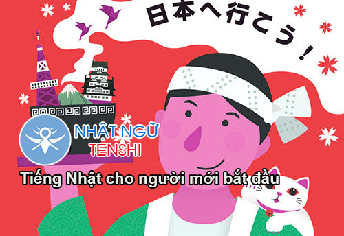
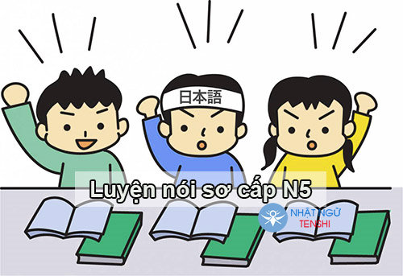
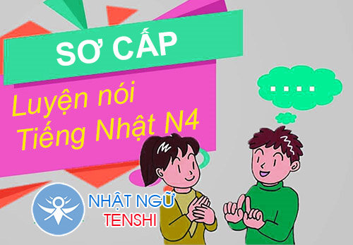
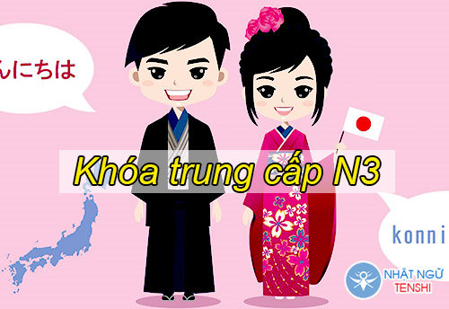
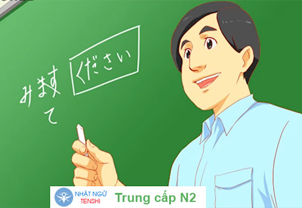
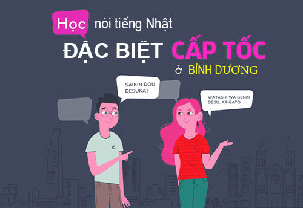

Bạn muốn học tốt Nhật ngữ? Hãy đến với trung tâm của chúng tôi
BẮT ĐẦUCÁC KHÓA HỌC CƠ BẢN

-

KHÓA HỌC CHO NGƯỜI BẮT ĐẦU
Chương trình bài giảng sáng tạo, mỗi một ngày được phân từng phần học, học viên chỉ cần học theo trình tự phân bố sẽ hoàn thành dễ dàng kiến thức nhập môn Tiếng Nhật. Trong vòng 1 tháng bạn sẽ được học nhuần nhuyễn 2 bảng chữ cái HIRAGANA và KATAKANA.
-

KHÓA SƠ CẤP LUYỆN NÓI N5
Học viên sẽ được học 25 bài ngữ pháp, giao tiếp căn bản trong sinh hoạt hằng ngày. ( Học nghe, nói, đọc, viết, ngữ pháp, Hán tự, giải bài tập, thuyết trình, văn hóa Nhật bản…) tập trung nhất là môn NÓI cấp độ ngày càng cao hơn giúp ta nói được nhiều hơn. Sau khoảng 8 tháng mình sẽ kết thúc khóa N5 và luyện thi.
-

KHÓA SƠ CẤP LUYỆN NÓ N4
Học viên sẽ được học 25 bài ngữ pháp tiếp theo, giao tiếp căn bản trong sinh hoạt hằng ngày cấp độ cao hơn. ( Học nghe, nói, đọc, viết, ngữ pháp, Hán tự, giải bài tập, thuyết trình, văn hóa Nhật bản…) tập trung nhất là môn NÓI cấp độ ngày càng cao hơn giúp ta nói được nhiều hơn. Sau khoảng 8 tháng mình sẽ kết thúc khóa N4 và luyện thi. N4 có thể đi làm văn phòng và giao tiếp thông dụng được.
-

KHÓA TRUNG CẤP LUYỆN NÓI N3
Sau khi học viên đạt trình độ sơ cấp tương đương N4, để nâng cao hơn khả năng tiếng Nhật, sử dụng những câu từ phức tạp hơn các học viên phải đạt được trình độ trung cấp trở lên.
-

KHÓA TRUNG CẤP LUYỆN NÓI N2
Với các học viên đã đạt được N3, thì phải hiểu được việc học tiếng Nhật lên cao là sự nổ lực của bản thân, giáo viên chỉ là người dẫn dắt và lý giải những thắc mắc trong quá trình học của mình.
-

LUYỆN NÓI ĐẶC BIỆT CẤP TỐC
Bạn chỉ cần chứng chỉ sơ cấp N5 để đi du học, hoặc cần thời gian ngắn nhất học tiếng Nhật nhưng chưa biết bắt đầu từ đâu, hãy tham gia khóa học cấp tốc đạt trình độ N5 chỉ trong 3 tháng.